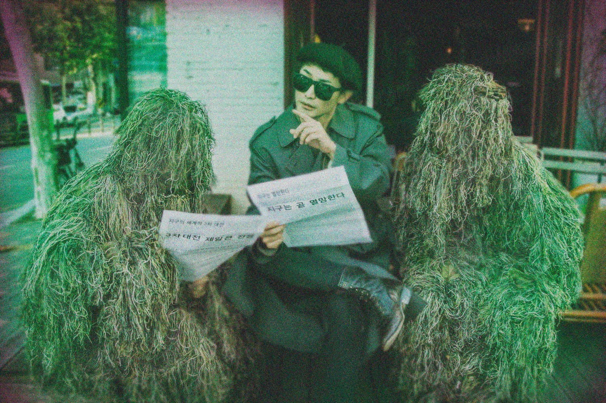
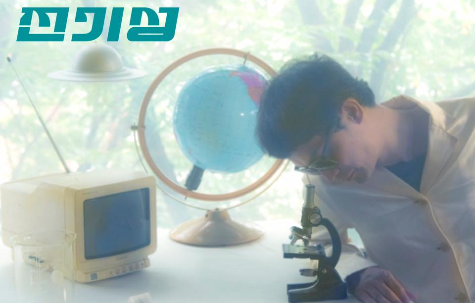
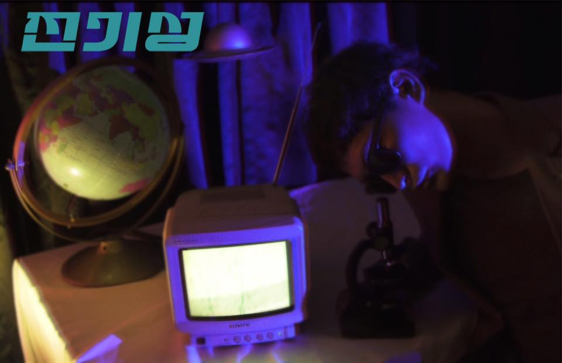
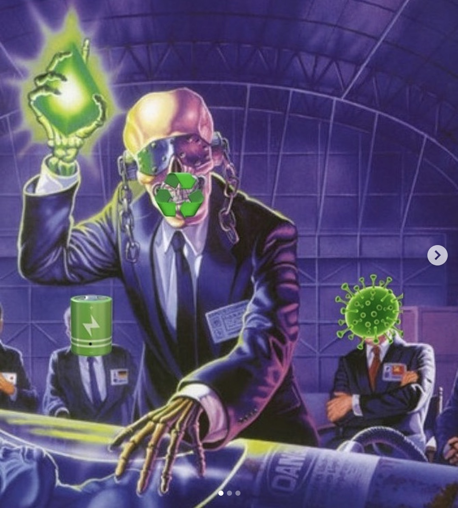

2017.
사이코 메트리-O
장르 : 인디
|

|




모든 이들이 4차 산업 혁명의 미래로 향할 때 홀로 시대를 역주행하는 세기말의 우상 전성기(보컬/기타). 그를 중심으로 이호진(기타/프로그래밍)과 조영재(신디사이저)가 함께하는 3인조 밴드 '전기성'. 전기성. 고전소설에 나오는 기이하고 비현실적인 성질을 가리킨다.
그렇다면 전기성의 리더 전성기는 홍길동 정도가 될까. 정확한 표현은 아니다. 1999년에 나온 영화 '매트릭스'의 주인공 네오에게서 전성기를 본다. 1999년이 아니라 1989년쯤에 서식한다는 점이 좀 다를 뿐이다.. '급한 일은 컴퓨터 손목시계를 통해 연락이 가능해(미래미래미래)' '언제부터인가 머리 속에/의무적으로 설치된/트랜지스터를 통하여/정보와 감정은 공유되고'('주파수는 나에게'중) 전기성의 명석하며 흐리멍텅한 시대착오적 세계관을 노랫말에서 엿본다.
1980년대의 관점에서 1999년의 미래를 염려하는 2018년의 사람들. 이들은 디스토피아를 구하러 오지 않았다. 혼돈의 전기 놀음을 더하러 왔을 뿐이다. 그리고 신시사이저, 신시사이저, 신시사이저... -임희윤(온더스테이지 기획위원)